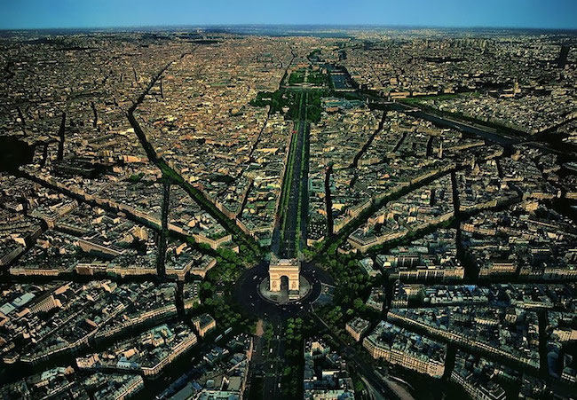
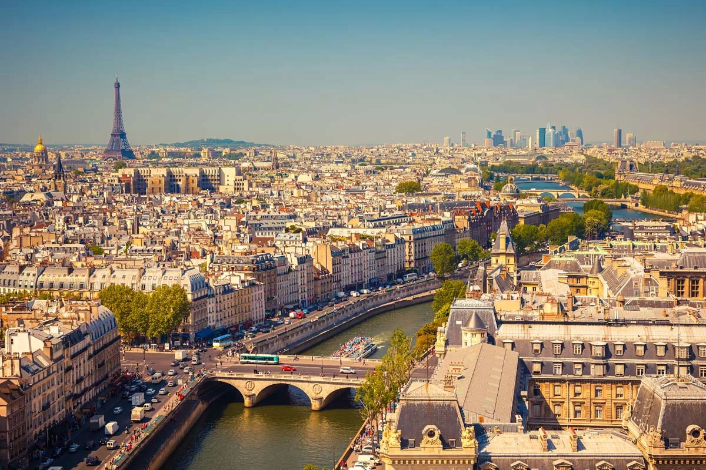
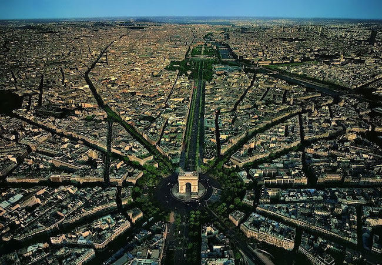
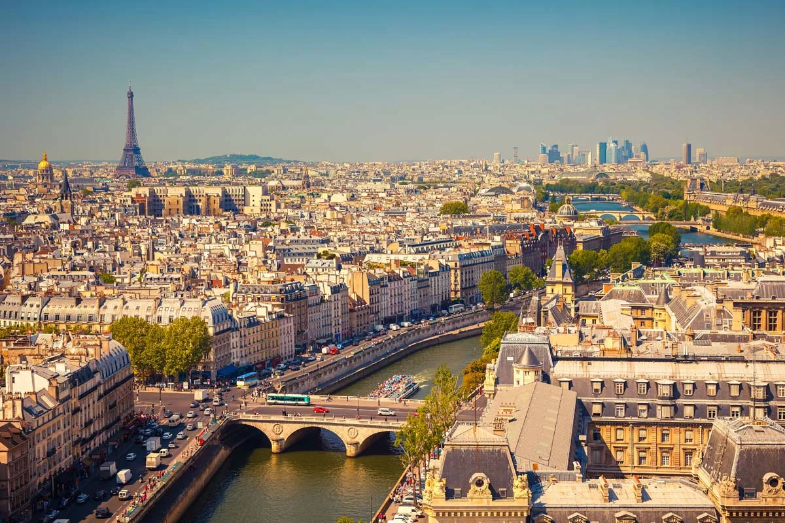
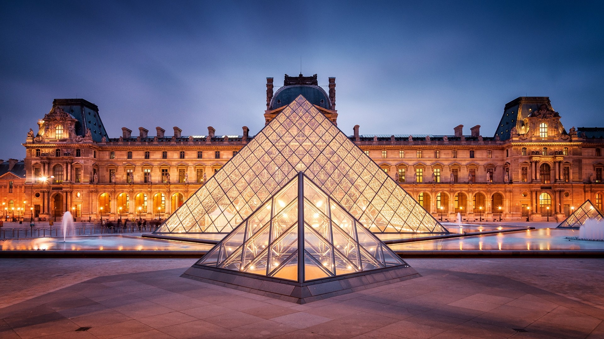
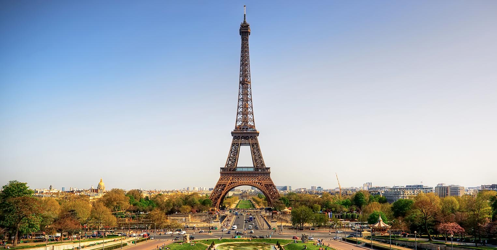
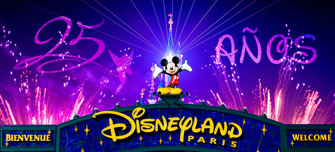
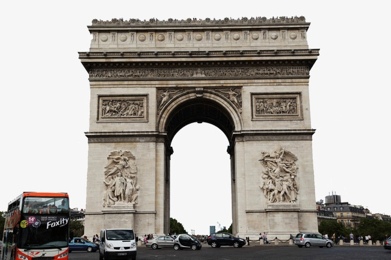

PARIS
En la mitología griega, Paris (en griego antiguo: Πάρις), también llamado Alejandro (en griego antiguo: Αλέξανδρος, Aléxandros, 'el protector del varón'), fue un príncipe troyano, hijo del rey Príamo y de su esposa Hécuba y hermano de Héctor. Paris fue conocido como
«El de la hermosa figura».
 




París (en francés Paris, pronunciado Acerca de este sonido [paʁi] (?·i)) es la capital de Francia y su ciudad más poblada. Capital de la región de Isla de Francia (o "Región Parisina"), constituye la única comuna unidepartamental del país. Está situada a ambos márgenes de un largo meandro del río Sena, en el centro de la cuenca parisina, entre la confluencia del río Marne y el Sena, aguas arriba, y el Oise y el Sena, aguas abajo. La ciudad de París, dentro de sus estrechos límites administrativos, tiene una población de 2 273 305 habitantes en 2015.2 Sin embargo, en el siglo XX, el área metropolitana de París se expandió más allá de los límites del municipio de París, y es hoy en día, con una población de 12 405 426 habitantes en 2013, la segunda área metropolitana del continente europeo (después de Londres) y la 28ª del mundo.4 La región de París es junto con la de Londres, uno de los núcleos económicos más importantes de Europa.6 Con 607 000 millones de
| Monumentos | Tarifas |
|---|---|
|  Museo del Louvre: tour guiado de 2 horas sin colas | 48 € |  Versalles: tour guiado sin colas de 90 minutos Versalles: tour guiado sin colas de 90 minutos |
40 € |
|  Torre Eiffel: acceso prioritario al segundo piso | 32,80 € |
|  Disneyland París: ticket de 1 día | 49,07 € |
|  París: sin colas a la azotea del Arco de Triunfo | 12 € |